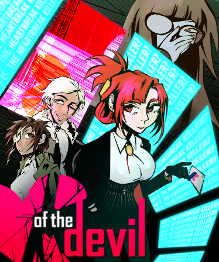

Wie ben ik?
-

-
bunny

(important)
-
wie ben ik?
ik ben Melissa
-
Waarom heb ik voor FDND gekozen?
Hiervoor heb ik AD software development gedaan, maar dat bleek niet voor mij te zijn vanwege de slechte organisatie en onduidelijkheid. Daarbij ging het alleen maar om backend, terwijl ik Frontend juist interressanter vind.
-
Favoriete game
of the Devil

-
huidig boek wat ik lees
Orlando - a biography door Virginia Woolf